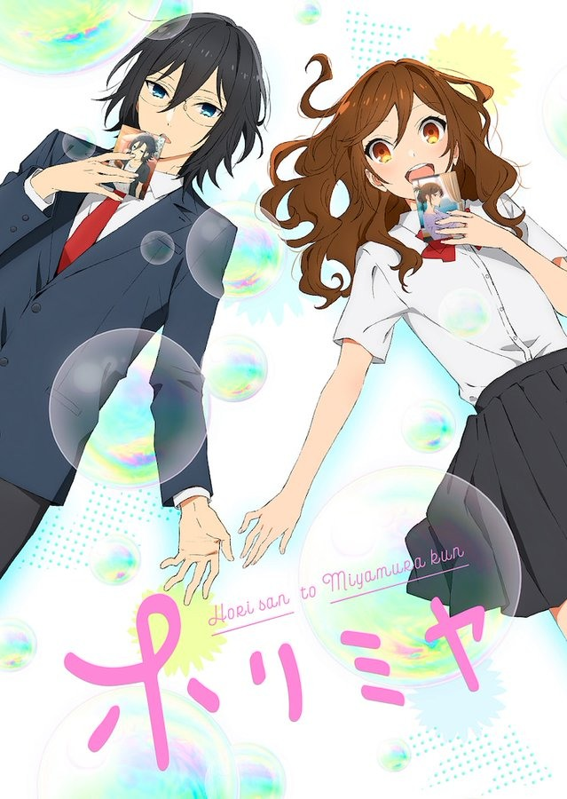

AnimeInterester
堀與宮村

故事簡介
堀京子外表漂亮，成績優良，在學校是班上的中心人物。其實她代替工作繁忙的雙親，放學後直奔回家，忙於家事與照顧年幼弟弟，是一位顧家的高中生。 某天，受傷的弟弟創太被一位陌生男子護送回家。「堀同學」她聽到這句話，這才發現他是同班同學宮村。班上最受歡迎的女同學與陰沉的男同學相遇之後，戀愛、友情、青春爆發的校園生活超微碳酸系展開！
製作人員
原作：HERO / 萩原ダイスケ
導演：石浜真史
系列構成・腳本：吉岡たかを
角色設計：飯塚晴子
總作畫監督：飯塚晴子 / 髙田晃 / 清水祐実 / 緒方浩美
色彩設計：横田明日香
美術監督：守安靖尚 / 薄井久代
攝影監督：佐久間悠也
CG導演：宮地克明
剪輯：木村祥明
音響監督：明田川仁
音樂：横山克
製作：「ホリミヤ」製作委員会
聲優名單
堀京子：戸松遥
宮村伊澄：内山昂輝
石川透：山下誠一郎
吉川由紀：小坂井祐莉繪
仙石翔：岡本信彦
綾崎禮未：M・A・O
河野櫻：近藤玲奈
井浦秀：山下大輝
柳明音：福山潤
進藤晃一：八代拓
谷原慎雄：千葉翔也
澤田步乃果：麻倉桃
堀京介：小野大輔
堀百合子：茅野愛衣
堀創太：寺崎裕香
井浦基子：金元壽子
各集標題
| 話數 | 標題 |
|---|---|
| 1 | 因為一個小契機 |
| 2 | 人並非只有一面 |
| 3 | 所以沒問題的 |
| 4 | 原來每個人都有喜歡的人 |
| 5 | 那是說不出口的事 |
| 6 | 那是說不出口的事 |
| 7 | 有你在有我在 |
| 8 | 因謊言而顯露的真心 |
| 9 | 即使困難 並非辦不到 |
| 10 | 直至雪融那天 |
| 11 | 嘴上說討厭 其實不然 |
| 12 | 嘴上說討厭 其實不然 |
| 13 | 至少獻上這片天空 |